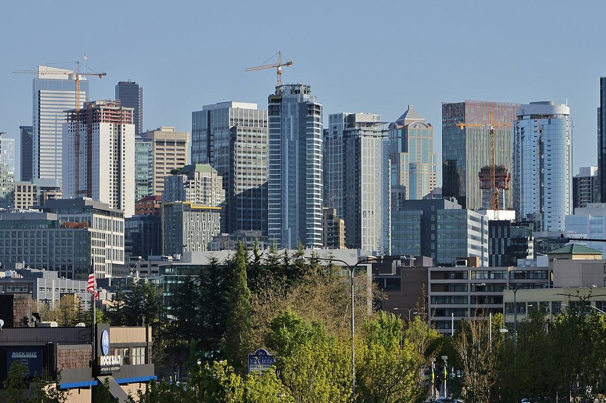

Living in Denny Triangle

The Denny Triangle is a neighborhood in Seattle, Washington, United States, that stretches north of Downtown Seattle to the grounds of the Seattle Center. Its generally flat terrain was originally a steep hill, taken down as part of a mammoth construction project in the first decades of the 20th century known as the Denny Regrade, which is another name for the neighborhood on the regraded area. The name Denny Triangle, referring to the northeastern portion of this regrading project, is a term that has gained currency as this neighborhood has seen increasing development in the first decades of the 21st century. (From Wikipedia, CC BY-SA 4.0)
Denny Triangle is a neighborhood in Downtown, Seattle with about 7,504 residents. The typical home value is about $570K (-5.6% over the past year), and 63 homes sold in the last 12 months. It is very walkable, with higher crime than most neighborhoods in the area.
Home prices and the market
| Typical home value | $570K · -5.6% over 12 months |
|---|---|
| Homes sold, last 12 months | 63 · median sale price $633K · 63 were condos |
| Homes for sale (estimate) | 48 · homes typically go under contract in 18 days |
| Median household income | $191K · 29th highest income of 155 |
Schools
| Elementary | Lowell Elementary School, 1.0 mi · 29% meet standard Area average 40% · 143rd best elementary schools of 155 |
|---|---|
| Middle school | Edmonds S. Meany Middle School, 1.5 mi · 41% meet standard Area average 54% · 114th best middle schools of 155 |
| High school | Summit Public School: Sierra, 1.5 mi · 38% meet standard Area average 56% · 127th best high schools of 155 |
| Nearest college | Cornish College of the Arts, 0.2 mi |
Share of students meeting the Washington state standard in English and math (2024-25). The nearest school is not always the assigned school; check with the school district.
Safety
About 88 crimes per 1,000 residents a year (violent crimes counted three times), higher crime than most neighborhoods in the area: 133rd lowest crime of 155. Based on mapped police incidents in this neighborhood, scaled to the city's FBI-reported rate. Busy commercial areas can look high because visitors are not counted as residents.
Getting around
| Walkability | 18.6 of 20 (very walkable) · 5th most walkable of 155 |
|---|---|
| Light rail or train | Westlake And 7th, 0.1 mi · 2nd closest to rail of 155 |
| Nearest bus stop | Virginia St & 9th Ave, 0.06 mi |
| How residents commute | 4% take transit · 43% work from home |
Everyday amenities
| Grocery store | Whole Foods Market, 0.2 mi · 13 within a mile |
|---|---|
| Pharmacy | Capsule, 0.2 mi |
| Restaurants | 395 within a mile · 3rd most restaurants nearby of 155 |
| Shopping | Pacific Place, 0.2 mi |
| Hospital | Virginia Mason Hospital, 0.6 mi · 35 clinics within 2 miles |
| Library | Washington Talking Book and Braille Library, 0.1 mi |
Parks and recreation
| Nearest park | Urban Triangle Park, 0.1 mi · 142 acres of parks within a mile |
|---|---|
| Large green space | Seattle Center, 0.7 mi |
| Walking trail | Freeway Park Trails, 0.4 mi |
| Gyms, spas and studios | 63 within a mile |
| Golf | Interbay Golf, 2.6 mi |
Thinking about Denny Triangle?
Rachel Yo, Realogics Sotheby's International Realty, can walk you through homes for sale, recent sales and what to know before you buy here.
Your details go only to Rachel Yo at Realogics Sotheby's International Realty to answer your request. They are not sold or shared, and your mobile number and texting permission are never shared with anyone for marketing.
Nearby neighborhoods
- Central Business DistrictSeattle · $591K
- Pike-MarketSeattle · $674K
- BelltownSeattle · $518K
- First HillSeattle · $540K
- BroadwaySeattle · $658K
- South Lake UnionSeattle · $674K
Data as of: home values Zillow 2026-09; recorded sales Nov 2025 – Oct 2026; schools OSPI 2024-25; Census ACS 2020-2024. Distances are straight-line from the center of the neighborhood.